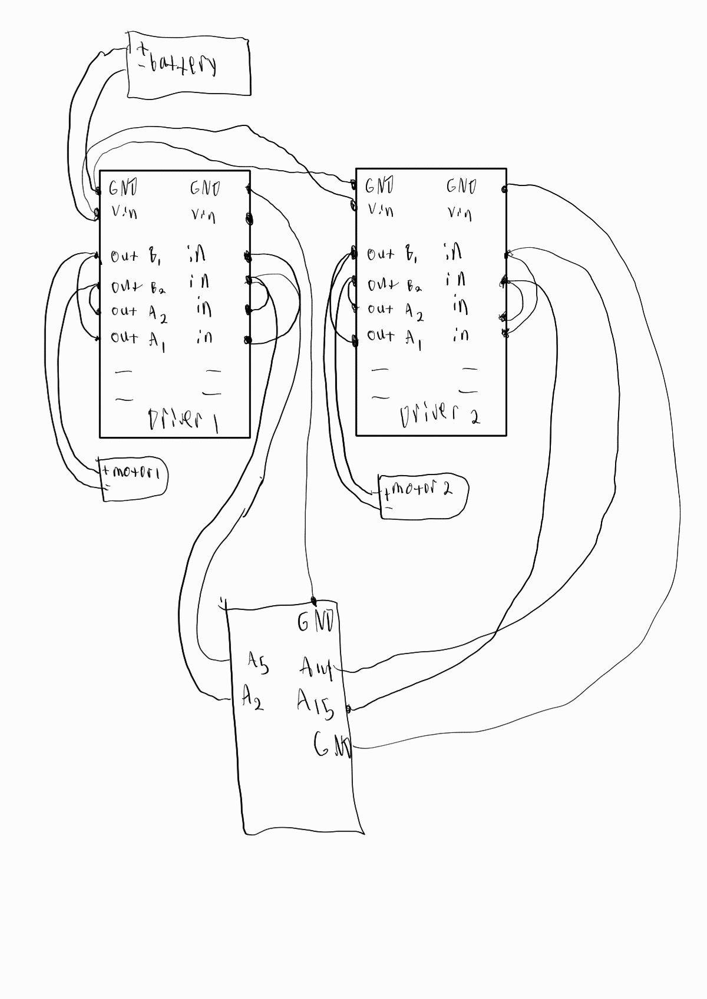
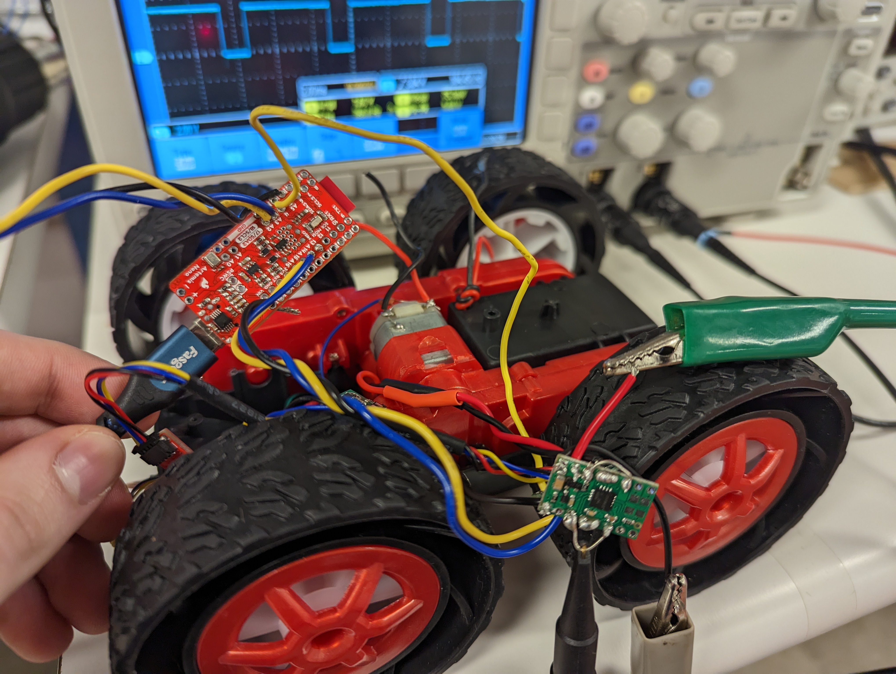
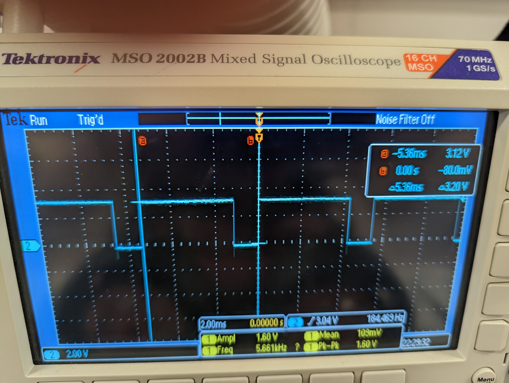
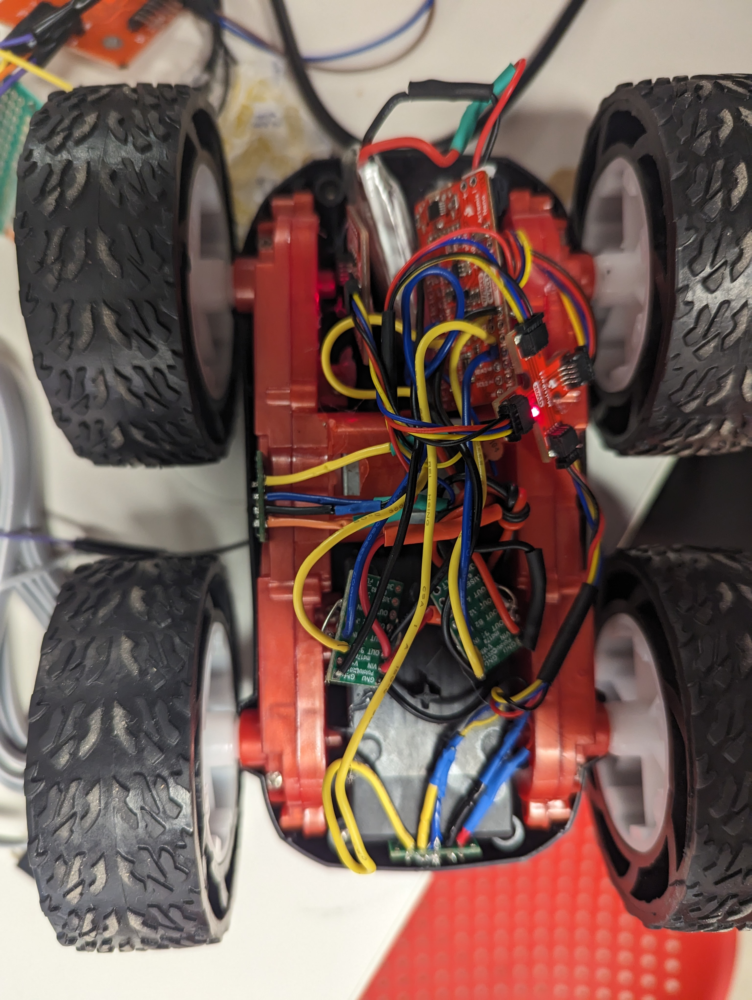

Lab 5
In Lab5, the goal was to investigate and integrate the motor drivers into the existing robot system allowing the artemis to control the position of the robot.
Prelab
Wiring
In planning the wiring for this lab, a few things were taken into account. To get input to the motor drivers, pwm pins had to be used on the artemis. Looking at the schematic for the board, available pins for this task were pins 4,5,14,15. To attach the motor drivers, the inputs and outputs of the motor were driven in parallel since only two inputs were used, but 4 are given, so the driver’s inputs and outputs had to be soldered together. Another important question was how to connect power as there are two motor drivers to drive, but only two leads from the battery. The solution to this was to run a wire through VCC of one motor driver, solder the wire to the pad, and then solder a small wire from the other driver’s VCC pad to this wire. The same was done for ground. To test the motor drivers. The result of these decisions is outlined in this high level diagram.

I soldered one of the motor drivers according to the previously explained diagram. After doing that, I hooked one of the motor driver inputs to the oscilloscope and the VCC and ground of one of the motor drivers.

Power supply setting
Since the battery that powers the motors works on 3.7V, a reasonable setting was 3.7-4.5V. I adjusted the current compliance on the power supply until there was no voltage drop while the motors were running. This current compliance ended up being about 2A.
Testing motor drivers
To test the motor drivers, I created a piece of code to run each input separately and 0 the other input.
analogWrite(15, 0);
analogWrite(14, 195);
delay(1000);
analogWrite(14,0);
analogWrite(15,195);
delay(1000);
I would then run this code on the other driver’s inputs (GPIO 4 and 5) to test that driver.
Here is a picture of the oscilloscope when one of the motor driver inputs is being powered. As you can see, the amplitude is 3.12V. 3V is around the expected 3.3V coming from the GPIO pin and The duty cycle can also be seen as since the duty cycle was about 195/256, so the wave is mostly high for the duration of the period.

This video resulted from running the code.
Spinning both motors
The process was repeated for the other motor driver and as discussed in the prelab, I hooked up the VCC and ground pins of the motor driver together through the battery leads. I then connected the battery and ran my code for both motor drivers. To do this, I created a more compact function as well as a few macros. First I defined the motor inputs,
#define FORWARD_MOTOR_1 15
#define BACKWARD_MOTOR_1 14
#define FORWARD_MOTOR_2 5
#define BACKWARD_MOTOR_2 2
I could then create an easy to use function, change_speed(), which would change the speed of each motor easily
void change_speed(int speed_1, int speed_2)
{
if (speed_1 > 0)
{
analogWrite(FORWARD_MOTOR_1, speed_1);
analogWrite(BACKWARD_MOTOR_1, 0);
}
else
{
analogWrite(FORWARD_MOTOR_1, 0);
analogWrite(BACKWARD_MOTOR_1, -speed_1);
}
if (speed_2 > 0)
{
analogWrite(FORWARD_MOTOR_2, speed_2);
analogWrite(BACKWARD_MOTOR_2, 0);
}
else
{
analogWrite(FORWARD_MOTOR_2, 0);
analogWrite(BACKWARD_MOTOR_2, -speed_2);
}
}
Then, I created a method, move, to add duration and the ability to choose between hard stopping and drifting after the movement was done.
inline void move(int speed_1, int speed_2, int duration, bool hard_stop)
{
change_speed(speed_1, speed_2);
delay(duration);
if (hard_stop)
{
analogWrite(FORWARD_MOTOR_1, 255);
analogWrite(BACKWARD_MOTOR_1, 255);
analogWrite(FORWARD_MOTOR_2, 255);
analogWrite(BACKWARD_MOTOR_2, 255);
}
else
{
analogWrite(FORWARD_MOTOR_1, 0);
analogWrite(BACKWARD_MOTOR_1, 0);
analogWrite(FORWARD_MOTOR_2, 0);
analogWrite(BACKWARD_MOTOR_2, 0);
}
}
After this was done, I could finally code the example shown in this video with both wheels able to spin in both directions independently and together
This is the code the example in the video ran on
int speed_1 = 100;
int speed_2 = 100;
move(0,speed_2,1000,1);
move(0,-speed_2,1000,1);
move(speed_1,0,1000,1);
move(-speed_1,0,1000,1);
move(speed_1,speed_2,1000,1);
move(-speed_1,-speed_2,1000,1);
Final Assembly
With both of the motor drivers tested and integrated, here is a photo of the final assembly. 
Bluetooth Integration
In order to discover the ranges of the pwm values available to use for driving the motors, I integrated the motor drivers into the bluetooth code by adding a MOVE_LINE command. It works like this,
case MOVE_LINE:
int speed1, speed2, time, stop_motor;
success = robot_cmd.get_next_value(speed1);
if (!success)
return;
success = robot_cmd.get_next_value(speed2);
if (!success)
return;
success = robot_cmd.get_next_value(time);
if (!success)
return;
success = robot_cmd.get_next_value(stop_motor);
if (!success)
return;
// move_stunt();
move(speed1, speed2, time, stop_motor);
break;
Essentially sending any possible command to the move() method over bluetooth. I could also replace the move() method with any other custom method and execute that instead.
Lower PWM Threshold
With MOVE_LINE created, I could then investigate the lower limits of the pwm values that moved the motors as when doing control theory later on, the output values to the motors should not be below this lower pwm threshold. To investigate this, I created a loop through various pwm values and sent them over bluetooth like this.
for i in range(12):
ble.send_command(CMD.MOVE_LINE,str(i*2+20) + "|" + str(i*2+20) + "|400")
print("Speed: ", i*2+20)
This would start and stop the motor at each speed. After trial and error, I found that the best interval to investigate this lower limit was pwm values 20-34. Resulting in this video.
in this video, you can see that the pwm value 22 is where the car wheels start to beat friction, but they fully beat the kinetic friction at 24, so 22 is good enough to beat dynamic friction most likely and 24 for static friction
Calibration
Since the motors don’t have the exact same torque output, they needed to be calibrated in order to move both sides of the car equally.
Here is a video of the car attempting to move in a straight line uncalibrated.
As you can see, the robot veers left.
By using MOVE_LINE, to adjust the speed parameters, I found that multiplying the left motor’s pwm value by 1.45 times the right motor pwm value was good, so this line was added to change_speed()
speed_1 = MOTOR_CORRECTION_FACTOR_1_to_2 * speed_1;
These two videos show the result as the robot moves in a straight line for 6 feet.
This video shows the robot moving straight on the slippery floors just outside phillips.
Open Loop Control
Finally, an open loop control stunt was created. This stunt involved moving straight, veering left, veering right, spinning and then going straight,left, and right again. This is open loop control as there is no feedback and the controller simply sends commands to the system.
Here is the code for this control,
int speed_1 = 75;
int speed_2 = speed_1;
move(speed_1, speed_2, 400, 0);
move(.2 * speed_1, speed_2, 800, 0);
move(speed_1, .2 * speed_2, 800, 0);
move(speed_1, .2 * speed_2, 800, 0);
move(-speed_1, speed_2, 1000, 0);
move(speed_1, speed_2, 400, 0);
move(.2 * speed_1, speed_2, 800, 0);
move(speed_1, .2 * speed_2, 800, 0);
Here is a video of the resulting control.